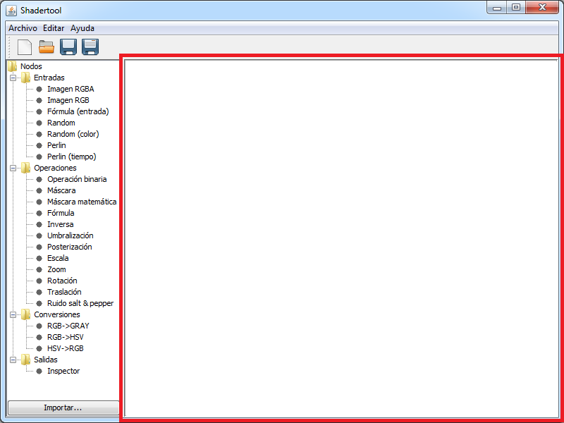

Editor
En el editor se realiza la mayor parte del proceso de tratamiento de la imagen. Las diferentes imágenes y operaciones (en forma de nodos) son representadas en el editor, así como las conexiones entre las mismas.
